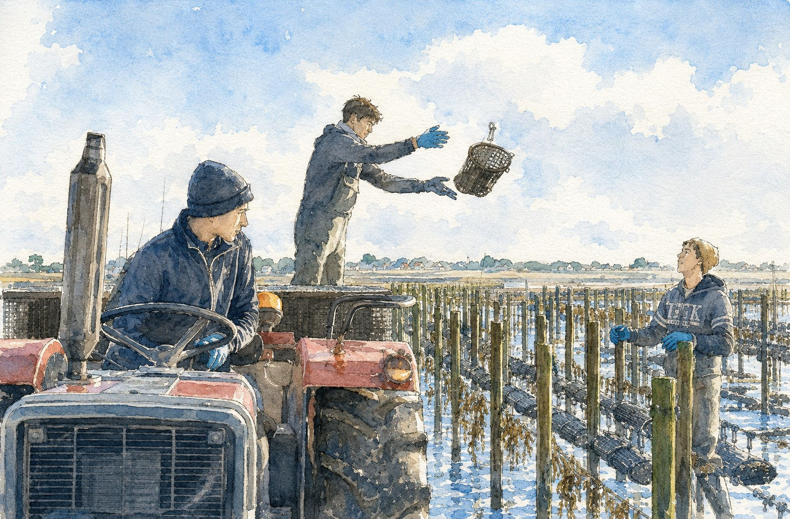

Producteurs ostréiculteurs · Bretagne
DREVICI OYSTER BAR
8 rue Biot, Paris 17e · Réservation en ligne
Producteurs
ostréiculteurs
8 rue Biot
Paris 17e
Producteurs ostréiculteurs
DREVICI OYSTER BAR
8 rue Biot, Paris 17e · Réservation en ligne
Producteurs ostréiculteurs ·
8 rue Biot, Paris 17e
Producteurs ostréiculteurs
Drevici Oyster Bar
8 rue Biot · Paris 17e

Producteurs ostréiculteurs
8 rue Biot · Paris 17e